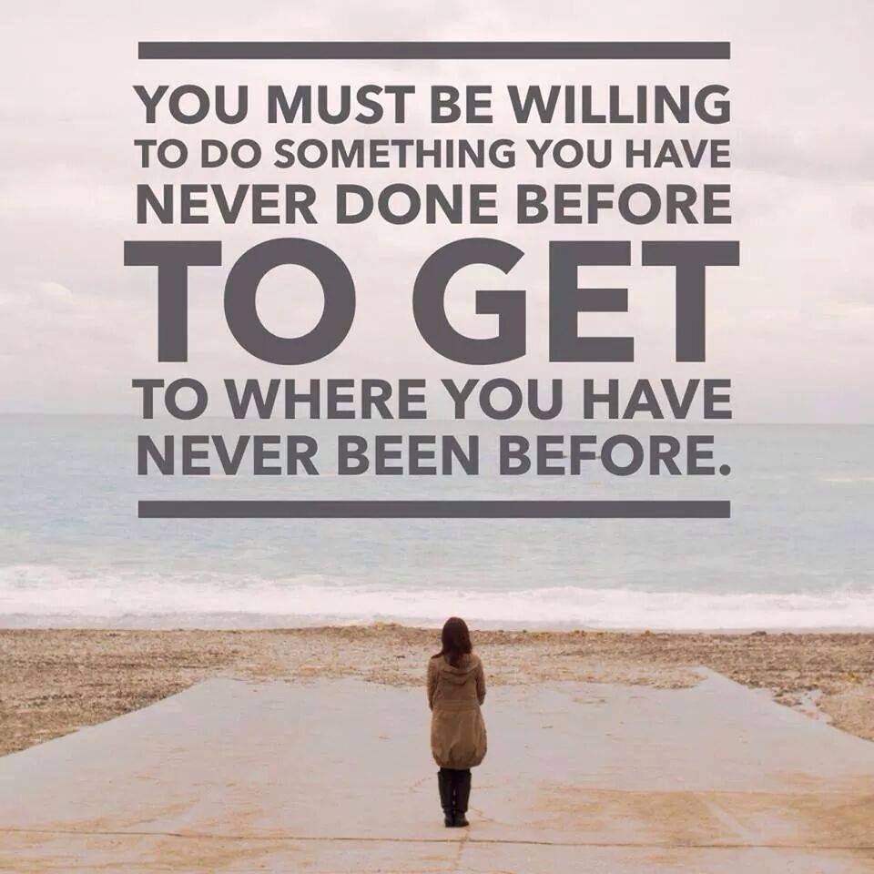

Motivation
Motivation is a powerful, yet tricky beast. Sometimes it is really easy to get motivated, and you find yourself wrapped up in a whirlwind of excitement. Other times, it is nearly impossible to figure out how to motivate yourself and you're trapped in a death spiral of procrastination. This page contains the best ideas and most useful research on how to get and stay motivated.
Productivity

Let's define productivity. Productivity is a measure of efficiency of a person completing a task. We often assume that productivity means getting more things done each day. Wrong. Productivity is getting important things done consistently. And no matter what you are working on, there are only a few things that are truly important.
Goal Setting

Goal setting is everywhere in our world. We set goals for our careers, our health, and our lives in general. It seems modern society is always encouraging us to think about the next milestone. However, what we don't think about enough is the science and strategy of how to accomplish your goals. That's what this guide is here to do.